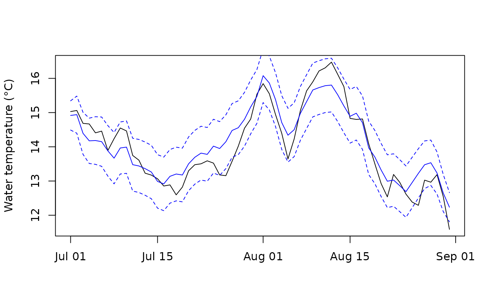

Daily water temperature with gaps filled from air temperature
Source:R/wet_temp_fill.R
wet_temp_fill.RdFills the missing days in daily water-temperature series, one station at a
time, with the daily air2stream model in its three-parameter form
(Toffolon & Piccolroaz 2015):
$$S_t = S_{t-1} + a_1 + a_2 A_t - a_3 S_{t-1}$$
where \(A\) is the daily mean air temperature, and a departure from it
that the station's own observations and its peers' carry across a gap. The
result keeps every observed day as it is and adds the filled days, so a
growing season cut by an outage or by a seasonal logger becomes complete
enough for wet_temp_gsdd().
Usage
wet_temp_fill(
temp,
air,
pool = NULL,
from = NULL,
to = NULL,
min_days = 365,
obs_sd = 0.1,
level = 0.95
)Arguments
- temp
Daily water temperature in the shape of
wet_temp_daily(): at leaststation_number,dateandt_mean_c, from any source (loggers included). Rows with no date, station or value are dropped.- air
Daily air temperature in the shape of
cd::cd_extract_daily():id(the station number),date,variableandvalue(°C). Only rows withvariable == "tmean"are used.- pool
NULL(every station in the call shares its anomaly), or a character vector of groups named bystation_number, e.g. the WSC sub-drainagesubstr(station_number, 1, 3). Peers come only from a station's own group.- from, to
First and last day to fill, as
Dateor"YYYY-MM-DD".NULL(the default) uses each station's first and last observed day. A seasonal logger needsfromandtoto cover the growing season (March to November) beforewet_temp_gsdd()can give a value; there the fill is anchored on one side only. Observed days outsidefromandtoare still returned, and still used in the fit.- min_days
Observed days with air temperature that a station needs to be fitted. A station with fewer is returned unfilled, with a warning.
- obs_sd
Measurement error of an observed daily mean, °C.
- level
Coverage of the interval on filled days.
Value
A data frame with the columns of temp, plus filled (TRUE on a
filled day), t_lo_c and t_hi_c (the interval, equal to t_mean_c on
an observed day), one row per station-day, ordered by station and date.
On filled days source is "air2stream", status is "provisional"
(never final, so wet_window_stats() counts them in frac_provisional),
n_hours is 0 and t_min_c and t_max_c are NA. Rows of temp that
are already filled are dropped first, so a result can be filled again.
The interval is per day: summing t_lo_c or t_hi_c does not bound a
sum such as GSDD. The attribute fit holds one row per fitted station:
a1, a2, a3 (open-loop air2stream), rmse_open (its in-sample error,
°C), rho, b, sigma (the departure), n_obs (observed days used) and
loglik.
How a gap is filled
The daily mean water temperature is \(W_t = S_t + u_t\):
\(S_t\) is air2stream run open-loop, from air temperature alone, floored at 0 °C for ice. Its parameters are fitted by least squares over the observed days, as air2stream is calibrated. On a long gap the fill falls back to it.
\(u_t\) is the departure from \(S_t\), an AR(1) process \(u_t = \rho u_{t-1} + b \bar{e}_t + \epsilon_t\), run through a Kalman filter and smoother. Each observed day sets it to the observed departure (up to a small measurement error,
obs_sd), so the fill restarts from every observed day. The smoother also uses the observation at the far end of a gap, so the fill meets it without a jump. The interval is narrow beside observed days and widest in the middle of a gap.\(\bar{e}_t\) is the mean one-step error of the departures of the other stations in the same
poolthat were observed that day and the day before: weather that air temperature does not carry (cloud, rain, snowmelt). \(b\) is fitted per station once at least 180 of its observed days have a peer error. A station that does not follow its peers, such as a lake outlet, gets \(b\) near 0. So pool stations that share weather, such as one basin's: the Skeena network model found the shared part still correlated at about 0.9 over 300 km (research/station_temperature_fill.md). A peer error beyond 4 of that peer's \(\sigma\) (a logger out of the water) is clipped.
Each station is fitted alone: \(a_1, a_2, a_3\) with stats::optim() on
the open-loop squared error, then \(\rho\), \(b\) and the daily noise
\(\sigma\) by maximum likelihood. The peer errors come from a first fit
of every station with \(b = 0\), so no station's error depends on its own
data. The fit uses every observed day with air temperature, whatever from
and to say. Separating \(S\) from \(u\) is what makes a long gap
work: fitted as one recursion by its one-step likelihood, air2stream takes
too much persistence and drifts over a season (research/station_temperature_fill.md).
Skill
Held out at 999 station-years of ECCC gauges (research/station_temperature_fill.md),
mean daily error was 0.48 °C on 7-day gaps, 0.76 °C on 30-day gaps and 0.84 °C
on a seasonal logger's missing spring and autumn, against 1.31, 1.43 and 1.14 °C
for open-loop air2stream. Over a whole missing season the daily error was
1.12 against 1.29 °C, but GSDD was no better (mean absolute error 130 against
129 °C-days). The interval covered 89-94 % of held-out days at a nominal 95 %.
Air temperature and days
air is the output of cd::cd_extract_daily(), which samples ERA5-Land on
local days at a fixed UTC−8. wet_temp_daily() uses each station's own
standard offset, so for the stations on UTC−7 (the Peace and parts of the
Kootenays) the two are an hour apart. That is not corrected. Gaps of up to
three days in a station's air temperature are interpolated linearly; a
station whose air has a longer gap inside its range is returned unfilled,
with a warning. Days outside the range of air temperature are not filled.
References
Toffolon, M. and Piccolroaz, S. 2015. A hybrid model for river water temperature as a function of air temperature and discharge. Environmental Research Letters 10: 114011. doi:10.1088/1748-9326/10/11/114011.
Examples
# Three years of air temperature and one station that tracks it
date <- seq(as.Date("2018-01-01"), as.Date("2020-12-31"), by = "day")
set.seed(1)
a <- 4 + 13 * sin(2 * pi * (as.integer(format(date, "%j")) - 110) / 365) +
as.numeric(stats::filter(rnorm(length(date), 0, 2), 0.7, method = "recursive"))
w <- numeric(length(date))
for (t in 2:length(date)) {
w[t] <- max(0, 0.82 * w[t - 1] + 0.6 + 0.12 * a[t] + rnorm(1, 0, 0.25))
}
air <- data.frame(id = "08AA001", date = date, variable = "tmean", value = a)
temp <- data.frame(station_number = "08AA001", date = date, t_mean_c = w)
# The logger was out of the water for July and August 2019
gap <- date >= as.Date("2019-07-01") & date <= as.Date("2019-08-31")
f <- wet_temp_fill(temp[!gap, ], air)
attr(f, "fit")
#> station_number a1 a2 a3 rmse_open rho b sigma
#> 1 08AA001 0.5863949 0.1202098 0.1794604 0.4150704 0.8622754 0 0.2031139
#> n_obs loglik
#> 1 1034 22.69557
# The fill against what the logger would have read
i <- f$filled
sqrt(mean((f$t_mean_c[i] - w[gap])^2))
#> [1] 0.4191972
plot(date[gap], w[gap], type = "l", xlab = "", ylab = "Water temperature (°C)")
lines(f$date[i], f$t_mean_c[i], col = "blue")
lines(f$date[i], f$t_lo_c[i], col = "blue", lty = 2)
lines(f$date[i], f$t_hi_c[i], col = "blue", lty = 2)
